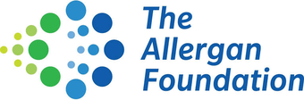
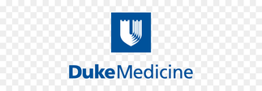
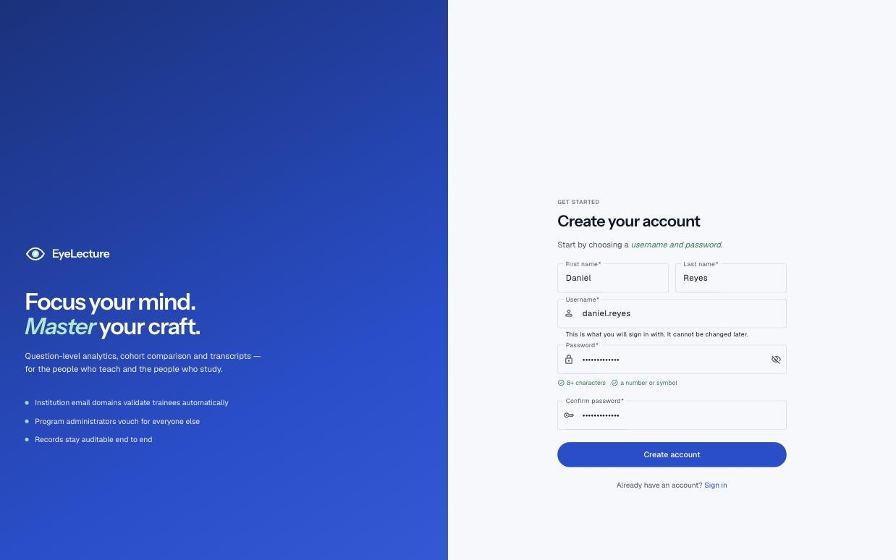
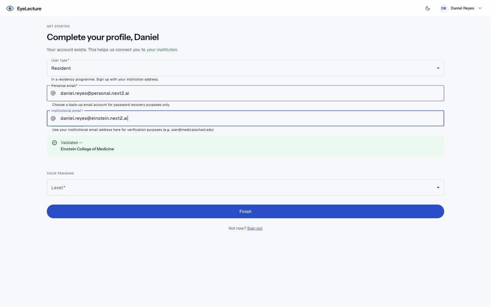
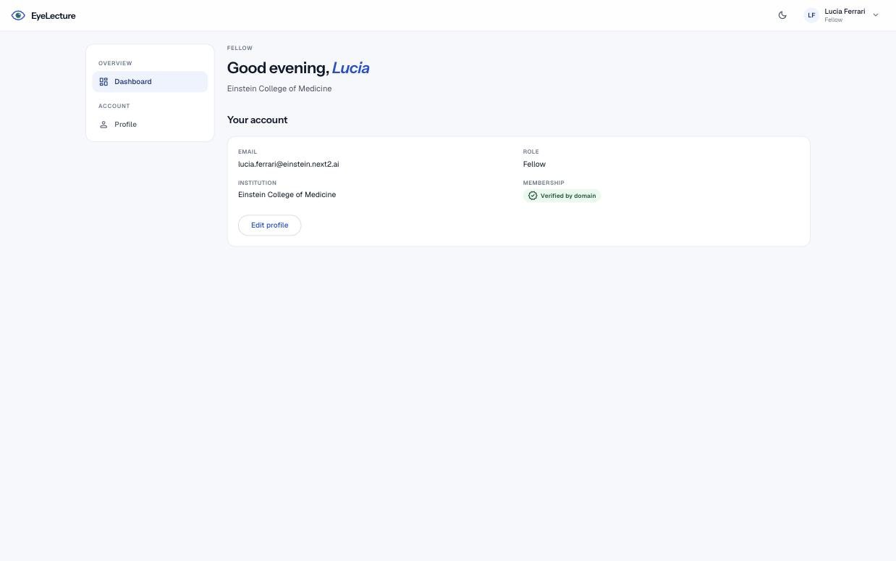
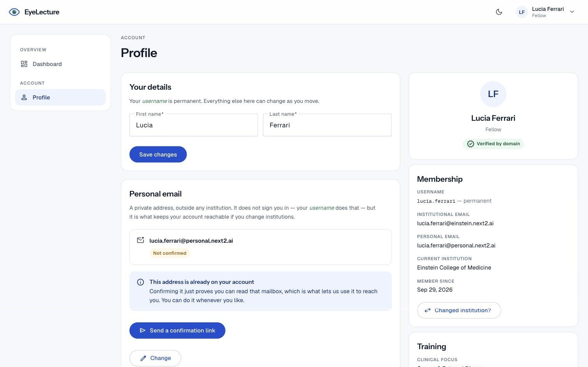

Collaborative
A shared educational space where learners and educators across institutions can exchange knowledge, resources, and expertise.
Elevate your training
EyeLecture is a cloud-based educational platform designed to support collaboration between esteemed faculty and trainees from around the world.
Free, not-for-profit educational resource
Sponsors & collaborators
EyeLecture highlights the academic collaborators and supporters helping build a free, not-for-profit ophthalmology education platform.

The Sheindlin Family Foundation | Manhattan Eye and Ear Ophthalmology Alumni Foundation | Ronald M. Burde Education Fund

Features
A shared educational space where learners and educators across institutions can exchange knowledge, resources, and expertise.
Faculty can curate and contribute content and build structured learning experiences.
Users can benefit from detailed performance and engagement metrics.
Program directors can tailor learning by combining program-specific educational material with shared EyeLecture resources.
Faculty can update educational material directly within the platform as training needs change.
Learners complete multimedia modules on their own schedule, leaving teaching time for discussion and application.
Ophthalmology education, built for the way we train.
EyeLecture centralizes high quality ophthalmic teaching, giving trainees on-demand access to core concepts and educators the tools to build them into their curriculum.
How EyeLecture works
Choose a permanent username and password so your account stays with you throughout training.
Tell us whether you are a medical student, resident, or fellow and connect with your institution.
Participating institutions can verify learners automatically or through a program administrator.




Already have an account? Log in
For ophthalmology training programs
EyeLecture gives ophthalmology programs a central place to connect trainees with educational resources while maintaining their own institutional presence.
Recognize institutional domains and enable program-administrator review to verify trainees.
Manage participating users, designate administrators, and maintain your institution's presence.
Combine shared resources with program-specific material to support curriculum goals.
Preserve learners' institutional affiliations over time as they advance through training.
Mission statement
Our mission
EyeLecture aims to democratize educational resources and equip training programs with the technology to meet the needs of the modern learner.
Our story
EyeLecture was conceptualized by Dr. Anurag Shrivastava in 2017 while serving as Residency Program Director for the Ophthalmology Program at Montefiore Medical Center and Albert Einstein College of Medicine. The project grew from the recognition that improving resident education directly supports better patient care. Initial development was supported by the Allergan Foundation, helping establish EyeLecture as a free, not-for-profit educational resource.
Sally Park MD joined in 2019 and helped develop the beta platform. Daniel Wisotsky (MS4) joined in 2023 and helped build out EyeLecture's lecture content and educational material. Current support from next2.ai and the ASCRS Foundation is helping move EyeLecture into its next phase: a scalable platform for accounts, institutions, curriculum, and access.
A dedicated team of educators, clinicians, creators, and students advancing ophthalmology education through collaboration and technology.
Short bio to come.
Short bio to come.
Short bio to come.
Short bio to come.
Short bio to come.
Short bio to come.
Short bio to come.
Medical students who help create and curate EyeLecture content.
Questions
Everything people ask before bringing a program across.
Medical students, ophthalmology residents, fellows, and faculty or program leadership involved in ophthalmology education.
Program leadership can contact EyeLecture to begin onboarding and configure institutional access.
EyeLecture is a free, not-for-profit educational resource.
No. Domains make verification easier, but program administrators can review requests manually.
Use Forgot Password from the login page, or contact EyeLecture support.
Still have a question?
Contact us
If you have any remaining questions or want to learn more, please use this form or email us at the address below.
info@eyelecture.com